This analysis examines elective treatment waitlist performance in New Zealand using monthly Health New Zealand data from June 2015 to September 2025. The analysis focuses on changes over time, differences between specialties and districts, extended waits beyond 120 days, and forecasts of national waitlist performance through December 2027.
dim(waitlist) # Shows the number of rows and columns in the dataset
[1] 92592 10
colSums(is.na(waitlist)) # Counts how many missing (NA) values are in each column
Measure Quarter End when Data Extracted
0 0
Month End Date Region
0 0
District Specialty
0 0
Ethnicity Waiting under 120 days
0 0
Total Waiting Rurality
0 88417
summary(waitlist) # Gives a basic summary of every variable in the dataset
Measure Quarter End when Data Extracted
Length :92592 Min. :2025-06-30 00:00:00
N.unique : 1 1st Qu.:2025-06-30 00:00:00
N.blank : 0 Median :2025-06-30 00:00:00
Min.nchar: 17 Mean :2025-07-04 03:33:33
Max.nchar: 17 3rd Qu.:2025-06-30 00:00:00
Max. :2025-09-30 00:00:00
Month End Date Region District
Min. :2015-06-30 00:00:00 Length :92592 Length :92592
1st Qu.:2018-03-31 00:00:00 N.unique : 4 N.unique : 20
Median :2020-11-30 00:00:00 N.blank : 0 N.blank : 0
Mean :2020-11-08 09:50:07 Min.nchar: 8 Min.nchar: 5
3rd Qu.:2023-06-30 00:00:00 Max.nchar: 19 Max.nchar: 18
Max. :2025-09-30 00:00:00
Specialty Ethnicity Waiting under 120 days Total Waiting
Length :92592 Length :92592 Length :92592 Length :92592
N.unique : 25 N.unique : 4 N.unique : 962 N.unique : 1221
N.blank : 0 N.blank : 0 N.blank : 0 N.blank : 0
Min.nchar: 7 Min.nchar: 5 Min.nchar: 1 Min.nchar: 1
Max.nchar: 42 Max.nchar: 14 Max.nchar: 4 Max.nchar: 4
Rurality
Length :92592
N.unique : 3
N.blank : 0
Min.nchar: 5
Max.nchar: 7
NAs :88417
unique(waitlist$Specialty) # Shows every different specialty in the dataset
waitlist<-waitlist |>mutate(Year=year(`Month End Date`)) # Adds a Year column to waitlistsuppressed_by_year<-waitlist |>filter(`Waiting under 120 days`=="<5") |>group_by(Year) |>summarise(Suppresed_rows=n())totalYear_suppresion<-waitlist |>group_by(Year) |>summarise(Total_year_rows=n())Year_suppression<-totalYear_suppresion |>left_join(suppressed_by_year,by="Year")Percent_year_under5 <-Year_suppression |>mutate(Percent_rows_under5=Suppresed_rows/Total_year_rows*100)
Data Cleaning
waitlist<-waitlist |>mutate(Under_120_numeric=if_else(`Waiting under 120 days`=="<5",2.5, as.numeric(`Waiting under 120 days`)))
Warning: There was 1 warning in `mutate()`.
ℹ In argument: `Under_120_numeric = if_else(`Waiting under 120 days` == "<5",
2.5, as.numeric(`Waiting under 120 days`))`.
Caused by warning in `vec_if_else()`:
! NAs introduced by coercion
waitlist |>filter(is.na(Under_120_numeric) &!is.na(`Waiting under 120 days`) ) |>distinct(`Waiting under 120 days`)
# A tibble: 0 × 1
# ℹ 1 variable: Waiting under 120 days <chr>
# Finds original non-missing values that failed to convert to numericwaitlist |>filter(`Waiting under 120 days`=="<5") |>distinct(`Waiting under 120 days`, Under_120_numeric)
# A tibble: 1 × 2
`Waiting under 120 days` Under_120_numeric
<chr> <dbl>
1 <5 2.5
waitlist <- waitlist |>mutate(Total_waiting_numeric =if_else(`Total Waiting`=="<5",2.5,as.numeric(`Total Waiting`) ) ) # Creates a numeric Total Waiting column and estimates <5 as 2.5
Warning: There was 1 warning in `mutate()`.
ℹ In argument: `Total_waiting_numeric = if_else(`Total Waiting` == "<5", 2.5,
as.numeric(`Total Waiting`))`.
Caused by warning in `vec_if_else()`:
! NAs introduced by coercion
Specialty Performance Against the 120-Day Threshold
Total_specialty_percentage |>ggplot()+aes(x=Specialty_performance,y=reorder(Specialty,Specialty_performance))+geom_col(fill ="lightblue",colour ="steelblue")+geom_vline(xintercept =95)+labs(title="Elective Waitlist Performance by Specialty",subtitle="Combined perfomance across June 2015 to September 2025",x ="Patients waiting under 120 days (%)",y ="Specialty",caption ="Each bar represents the overall proportion of waiting-list counts under 120 days for that specialty across the full dataset period.")+scale_x_continuous(breaks =seq(0,100,10))
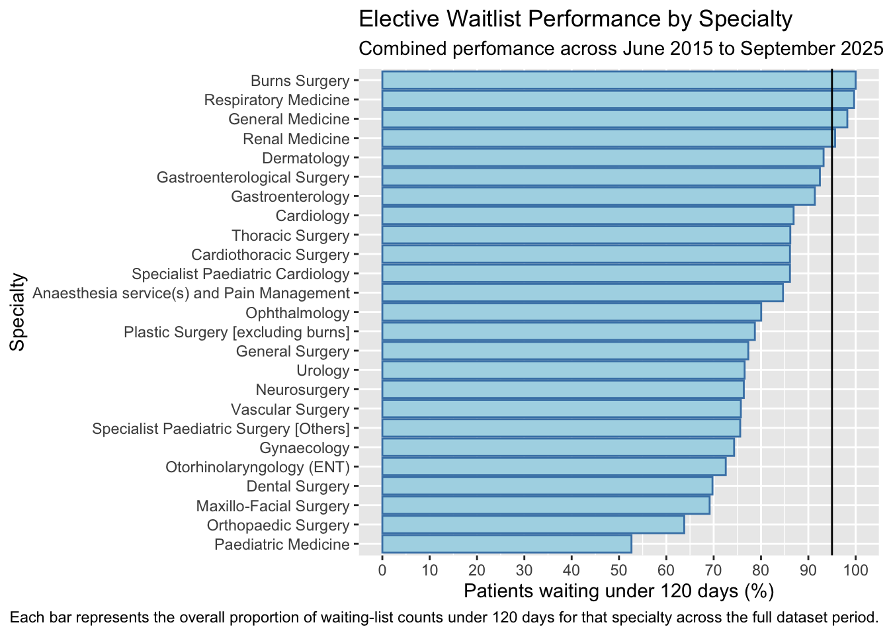
Each bar shows the combined proportion of waiting-list counts under 120 days for each specialty from June 2015 to September 2025. Higher percentages indicate better performance. The vertical line at 95% provides a reference point for the 120-day performance target. Results are aggregated across the full period and therefore represent long-term performance rather than performance in any individual year.
Recent Specialty Performance: 2020-2024
waitlist_5years<-waitlist |>filter(Year>=2020& Year <=2024) |>group_by(Specialty) |>summarise(Total_under120=sum(Under_120_numeric),Total_waiting5years=sum(Total_waiting_numeric)) |>mutate(Percentage_waitlist_5years= Total_under120/Total_waiting5years*100) |>arrange(Percentage_waitlist_5years) waitlist_5years |>ggplot()+aes(x=Percentage_waitlist_5years,y=reorder(Specialty,Percentage_waitlist_5years))+geom_col(fill ="lightblue",colour ="steelblue")+scale_x_continuous(breaks =seq(0,100,10))+geom_vline(xintercept=95)+labs(title ="Elective Waitlist Performance by Specialty",subtitle ="Performance across the five complete years from 2020 to 2024", x ="Patients waiting under 120 days (%)",y ="Specialty",caption ="Each bar represents the overall proportion of waiting-list counts under 120 days for that specialty across 2020–2024." )
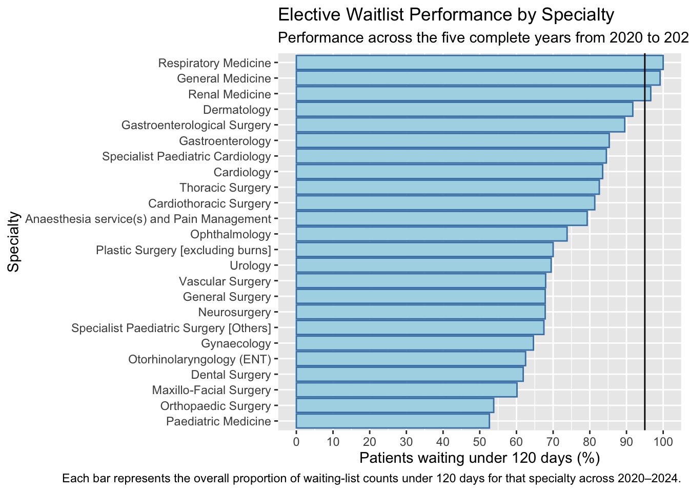
Latest Specialty Performance: 2025
waitlist_2025 <- waitlist |>filter(Year==2025) |>group_by(Specialty) |>summarise(Total_under120=sum(Under_120_numeric),Total_waiting2025=sum(Total_waiting_numeric)) |>mutate(Total_2025percentage= Total_under120/Total_waiting2025*100) |>arrange(Total_2025percentage)waitlist_2025 <- waitlist_2025 |>mutate(Performance_group =if_else(row_number() <=5,"Bottom 5","Other specialties" ) )waitlist_2025 <- waitlist_2025 |>rename(`Performance Group`= Performance_group)# GRAPHwaitlist_2025 |>ggplot() +aes(x = Total_2025percentage,y =reorder(Specialty, Total_2025percentage),fill =`Performance Group` ) +geom_col(colour ="steelblue") +scale_fill_manual(values =c("Bottom 5"="blue","Other specialties"="lightblue" ) )+geom_vline(xintercept =95)+scale_x_continuous(breaks =seq(0, 100, 10) ) +labs(title ="2025 Specialty Performance Against the 120-Day Threshold",subtitle ="Highlighting the five specialties furthest from the 95% target in 2025",x ="Patients waiting under 120 days (%)",y ="Specialty",caption ="Performance based on January to September 2025 waitlist data." )
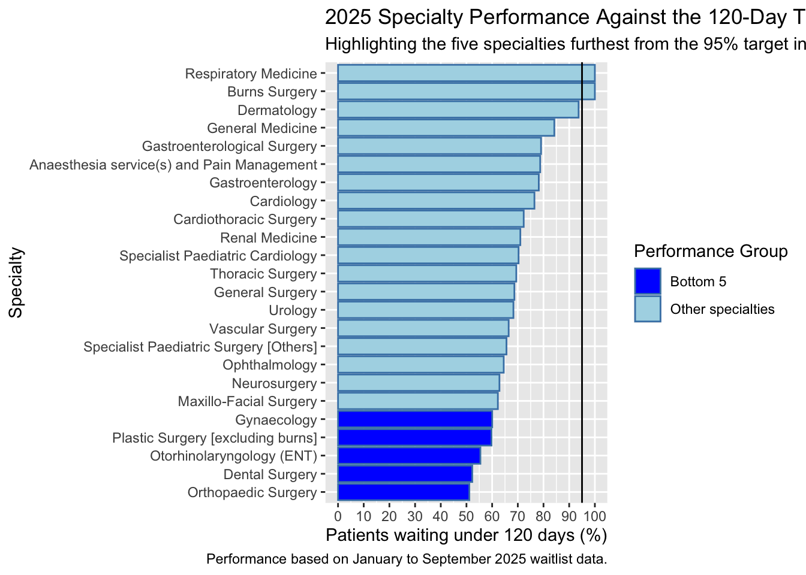
Change in Specialty Performance: 2020-2024 vs 2025
specialty_change_plot<-specialty_change_plot |>mutate(Change_group=if_else(Change_percentage_points<0,"Performance declined","Improved")) specialty_change_plot |>ggplot() +aes(x = Change_percentage_points,y =reorder(Specialty, Change_percentage_points),fill=Change_group ) +geom_col(colour ="black")+geom_vline(xintercept =0)+scale_fill_manual(values =c("Performance declined"="red","Improved"="green" ) )+labs(title =" 2025 Reveals Widespread Decline in Specialty Waitlist Performance",subtitle ="Comparing 2025 performance with the combined 2020–2024 baseline",x ="Change in patients waiting under 120 days (percentage points)",y ="Specialty",fill ="Performance change")+scale_x_continuous(breaks =seq(-25, 5, 5) )
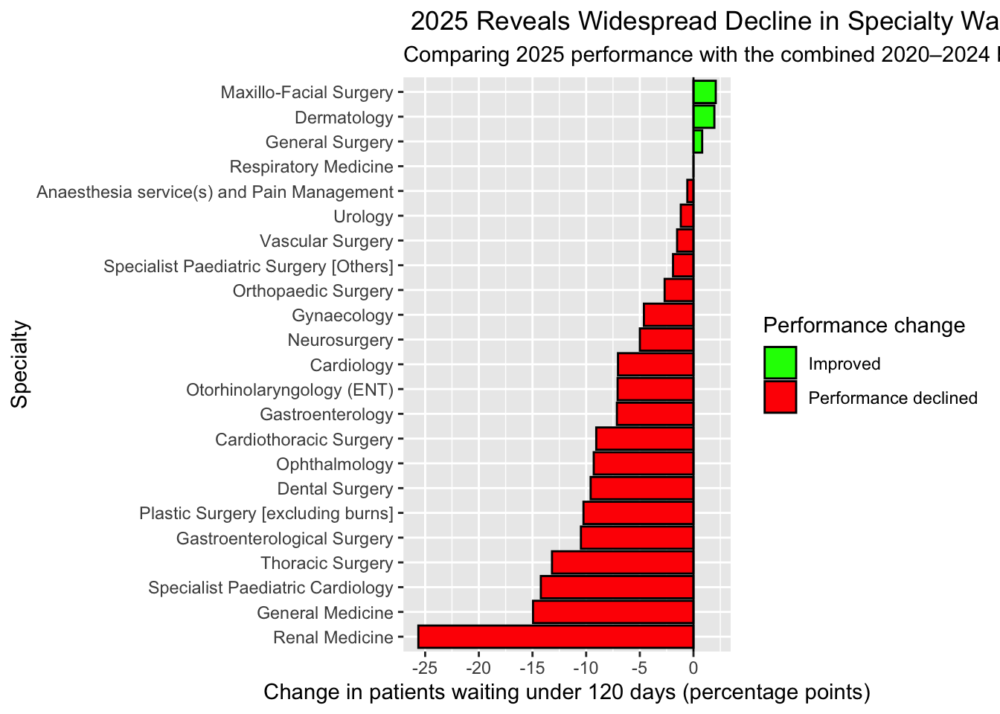
Specialty waitlist performance generally declined in the available 2025 data relative to the combined 2020–2024 baseline. Most specialties recorded a negative change in the proportion of patients waiting under 120 days, while only a small number showed improvement. Renal Medicine experienced the largest decline, falling by approximately 25 percentage points. This suggests that the deterioration observed from January to September 2025 was spread across multiple specialties rather than being isolated to one area.
Overall Waitlist Performance Trend: 2022–2025
waitlist_trend<-waitlist |>filter(Year>=2022) |>group_by(`Month End Date`) |>summarise(Total_under120=sum(Under_120_numeric),Total_waiting =sum(Total_waiting_numeric)) |>mutate(Percent_under120 = Total_under120 / Total_waiting *100 )waitlist_trend |>ggplot()+aes(x=`Month End Date`, y=Percent_under120)+geom_line(colour ="blue")+geom_point()+labs(title ="Overall Elective Waitlist Performance: 2022–2025",subtitle ="After a sharp decline in early 2025, performance recovered to its highest level since 2022",x ="Month",y ="Waiting under 120 days (%)" )
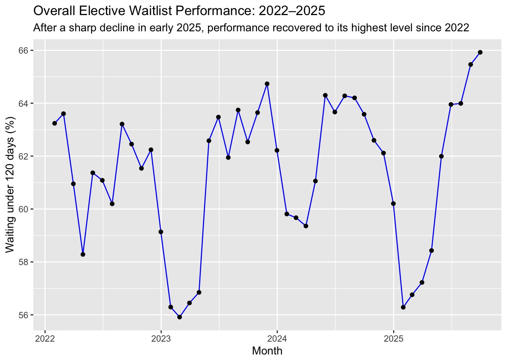
Overall elective waitlist performance fluctuated considerably between 2022 and 2025 rather than following a consistent upward or downward trend. Performance declined sharply in early 2023 before recovering through the remainder of the year, with another decline occurring in early 2024. The most pronounced recent fall occurred in early 2025, when the proportion waiting under 120 days dropped to approximately 56%. This was followed by a strong recovery, with the latest 2025 observations reaching the highest levels shown during the 2022–2025 period. This overall recovery does not necessarily contradict the specialty-level analysis, as individual specialties can perform below their 2020–2024 baseline while the combined monthly measure improves during 2025.
district_2025<-waitlist |>filter(Year==2025) |>group_by(District) |>summarise(Total_under120=sum(Under_120_numeric),Total_waiting=sum(Total_waiting_numeric)) |>mutate(District_performance=Total_under120/Total_waiting*100) |>arrange(District_performance)district_2025 |>ggplot() +aes(x = District_performance,y =reorder(District, District_performance) ) +geom_col(fill ="lightblue", colour ="steelblue") +scale_x_continuous(breaks =seq(0, 100, 10) ) +labs(title ="2025 Elective Waitlist Performance by District",subtitle ="Performance varies substantially across districts, with a gap of around 30 percentage points between the highest and lowest",x ="Patients waiting under 120 days (%)",y ="District",caption ="Each bar shows the proportion of elective waitlist counts under 120 days for each district in the available 2025 data." )
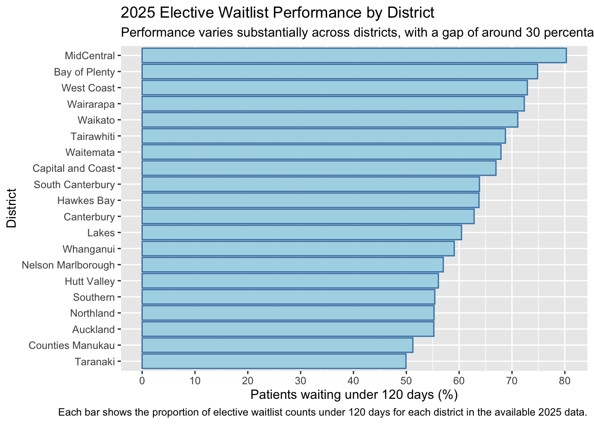
District Waitlist Performance Over Time: 2022-2025
district_trend<-waitlist |>filter(Year >=2022) |>group_by(District,`Month End Date`) |>summarise(Total_under120=sum(Under_120_numeric), Total_waiting=sum(Total_waiting_numeric),.groups ="drop") |>mutate(District_performance= Total_under120/Total_waiting*100)district_trend<- district_trend |>group_by(District) |>arrange(`Month End Date`, by_group=TRUE) |>mutate(Overall_change=last(District_performance)-first(District_performance),Change_group=if_else(Overall_change<0,"Net decline","Net improvement") ) |>arrange(Overall_change)district_trend |>ggplot()+aes(x=`Month End Date`,y=District_performance,colour=Change_group)+geom_line()+geom_point()+facet_wrap(~District,ncol=4)+scale_color_manual(values=c("Net decline"="red","Net improvement"="green"))+labs(title="District Waitlist Performance Trends: 2022–2025",subtitle ="Whanganui (-25.8 pp) and Counties Manukau (-13.7 pp) recorded the largest net declines",x="Date",y="Waiting under 120 days(%)",colour="Overall change" )+theme(legend.position ="bottom", axis.text.x =element_text(size =12),axis.text.y =element_text(size=12),strip.text =element_text(size =11),plot.title =element_text(size =18),plot.subtitle =element_text(size =13))
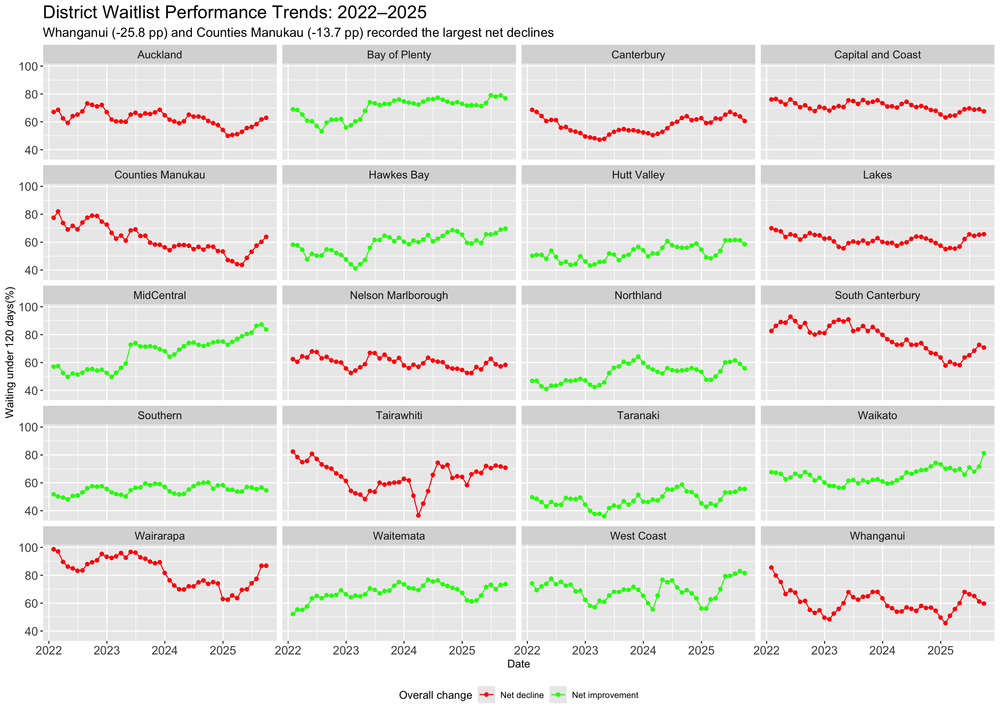
District-level elective waitlist perfomance varied considerably between 2022 and 2025. MidCentral recorded the largest net improvement, increasing by 26.6 percentage points, followed by Waitematā with an improvement of 21.5 percentage points. In contrast, Whanganui experienced the largest net decline, falling by 25.8 percentage points, while Counties Manukau declined by 13.7 percentage points.
The results show that changes in national waitlist performance were not experienced equally across districts. Some districts improved substantially over the period while others deteriorated. These figures represent the net change between each district’s first observation in 2022 and latest available observation in 2025, rather than a continuous increase or decline throughout the entire period.
# A tibble: 20 × 3
# Groups: District [20]
District Overall_change Change_group
<chr> <dbl> <chr>
1 Whanganui -25.8 Net decline
2 Counties Manukau -13.7 Net decline
3 South Canterbury -11.9 Net decline
4 Wairarapa -11.8 Net decline
5 Tairawhiti -11.6 Net decline
6 Capital and Coast -8.52 Net decline
7 Canterbury -7.99 Net decline
8 Lakes -4.26 Net decline
9 Auckland -4.16 Net decline
10 Nelson Marlborough -4.10 Net decline
11 Southern 2.85 Net improvement
12 Taranaki 5.95 Net improvement
13 West Coast 7.45 Net improvement
14 Bay of Plenty 7.89 Net improvement
15 Hutt Valley 8.28 Net improvement
16 Northland 9.01 Net improvement
17 Hawkes Bay 11.5 Net improvement
18 Waikato 13.7 Net improvement
19 Waitemata 21.5 Net improvement
20 MidCentral 26.6 Net improvement
#|fig-width: 11#|fig-height: 7.5SpecialtyWaitlist_District <- waitlist |>filter(Year ==2025) |>group_by(District, Specialty) |>summarise(Total_under120 =sum(Under_120_numeric),Total_waiting =sum(Total_waiting_numeric),.groups ="drop" ) |>mutate(specialty_performance = Total_under120 / Total_waiting *100,Percent_over120 =100- specialty_performance )worst_specialty_district <- SpecialtyWaitlist_District |>group_by(District) |>slice_max(Percent_over120)worst_specialty_district |>ggplot() +aes(x = Percent_over120,y =reorder(District, Percent_over120),fill = Specialty ) +geom_col() +scale_x_continuous(breaks =seq(0, 100, 10) ) +labs(title ="Worst-Performing Elective Specialty in Each District: 2025",subtitle ="Auckland’s Thoracic Surgery stands out, with 96.4% of waitlist counts over 120 days",x ="Waiting over 120 days (%)",y ="District",fill ="Specialty",caption ="Based on available 2025 elective waitlist data." )
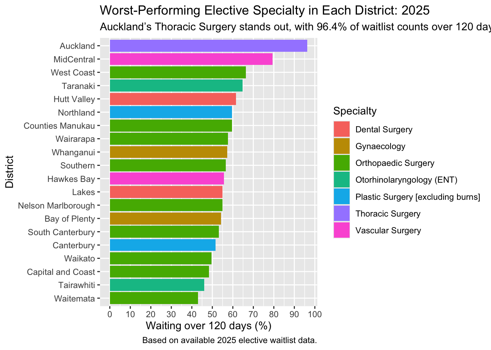
The worst-performing specialty varies considerably across districts in 2025. Auckland stands out, with 96.4% of aggregated Thoracic Surgery waitlist counts over 120 days. However, this specialty has a relatively small total waitlist count, so the result should be interpreted cautiously. A broader pattern is evident in Orthopaedic Surgery, which is the worst-performing specialty in 9 of the 20 districts. This suggests that poor elective waitlist performance is not limited to a single district or specialty, with Orthopaedic Surgery appearing as a recurring area of pressure across New Zealand.
Districts with the Highest Percentage of Elective Waitlist Patients Not Seen Within 120 Days: 2025
district_over120_2025 |>ggplot()+aes(x=Over120Percentage,y=reorder(District,Over120Percentage))+geom_col(colour ="black",fill ="lightblue")+labs(title="Districts with the Highest Percentage of Elective Waitlist Patients Not Seen Within 120 Days: 2025", subtitle ="Taranaki (50.1%) and Counties Manukau (48.8%) recorded the highest proportions not under 120 days",x="Over 120 Days(%)",y="Districts")
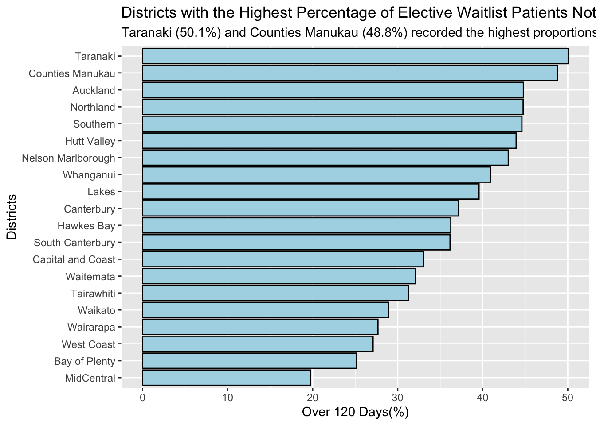
District-level elective waitlist performance varied considerably across New Zealand in 2025. Taranaki recorded the highest proportion of the elective waitlist over 120 days at 50.1%, followed by Counties Manukau at 48.8%. In contrast, MidCentral recorded the lowest proportion at 19.7%. This represents a difference of more than 30 percentage points between the highest and lowest-performing districts, showing substantial geographic variation in elective waitlist performance.
\newpage
Ethnicity Anaylisis
Worst-Performing Ethnicity Within Each District’s Worst Specialty
This analysis identifies the ethnicity with the highest proportion of waitlist counts over 120 days within the worst-performing specialty in each district during 2025.
ethnicityby_worst_specialty2025 <- waitlist |>filter(Year ==2025) |>inner_join(worst_specialty_district, by =c("District", "Specialty")) |>group_by(District, Specialty, Ethnicity) |>summarise(Total_waiting =sum(Total_waiting_numeric),Under_120 =sum(Under_120_numeric) ) |>mutate(Over_120 = Total_waiting - Under_120,Percentage_over120 = Over_120 / Total_waiting *100 ) |>arrange(desc(Percentage_over120)) |>slice_max(Percentage_over120) |>mutate(Axis_label =if_else( District =="Auckland",paste(District, Specialty, Ethnicity, sep =" - "),paste(District, Specialty, sep =" - ") ) )ggplot(ethnicityby_worst_specialty2025) +aes(x = Percentage_over120,y =reorder(Axis_label, Percentage_over120),fill = Ethnicity ) +geom_col() +labs(title ="Ethnicities Affected the Most by District and Specialty",subtitle ="European/Other and Pacific populations have the highest rates of extended waits in Auckland",x ="Percentage waiting over 120 days",y =NULL )
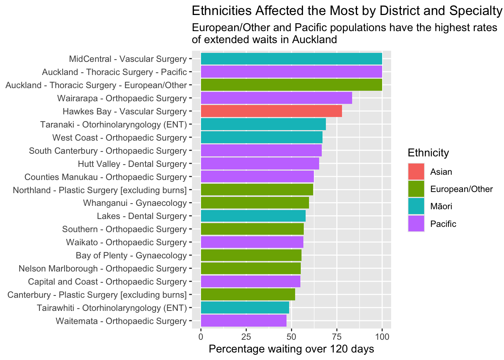
The results show substantial variation in extended elective-treatment waits across both districts and ethnic groups in 2025. Auckland Thoracic Surgery stands out, with both Pacific and European/Other patients in the analysed data recording 100% of their waiting-list counts beyond 120 days. MidCentral Vascular Surgery also shows a particularly high proportion of Māori patients waiting beyond 120 days, while Pacific patients represent the worst-performing ethnicity across many of the district-specialty combinations shown.
These findings occur within a broader national problem with elective-treatment timeliness. At the end of 2024, only 59.2% of patients received elective treatment within four months, compared with the national target of 95% (Ministry of Health, 2025a). The Ministry of Health also reports that prolonged waits can worsen patients’ conditions and contribute to reduced independence and quality of life (Ministry of Health, 2025a)
Predictive Modelling: Forecasting Elective Wait Times for 2026-2027
This section develops forecasting models to predict elective waitlist performance for 2026 and 2027. Historical waitlist data from June 2015 to September 2025 are used to identify temporal patterns and estimate future trends. Time-series forecasting is used for national-level projections, while machine-learning models are evaluated separately to determine whether additional predictive patterns can be identified at the district, specialty and ethnicity level.
National Waitlist Time-Series Model
#| fig-height: 6national_monthly<- waitlist |>group_by(`Month End Date`) |>summarise(Total_waiting=sum(Total_waiting_numeric),Under_120=sum(Under_120_numeric)) |>mutate(Over_120=Total_waiting-Under_120,Percentage_over120=Over_120/Total_waiting*100)national_monthly |>ggplot()+aes(x=`Month End Date`,y=Percentage_over120)+geom_line()+labs(title ="National Elective Waitlist Performance Over Time",x="Year",y="Percentage waiting over 120 days")
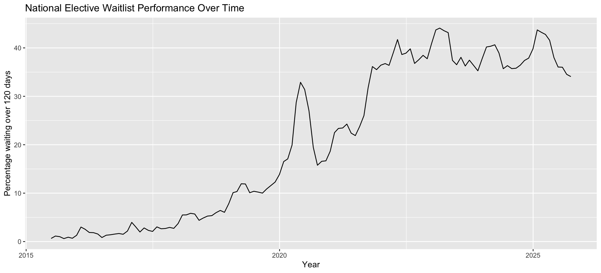
national_ts<-ts(national_monthly$Percentage_over120,start=c(2015,6), frequency =12)national_ts
Point Forecast Lo 80 Hi 80 Lo 95 Hi 95
Jan 2025 42.12943 40.18278 44.07607 39.15229 45.10656
Feb 2025 42.24968 38.26422 46.23514 36.15444 48.34492
Mar 2025 42.63479 37.34533 47.92425 34.54526 50.72432
Apr 2025 42.81277 36.48245 49.14308 33.13139 52.49415
May 2025 40.88027 33.65757 48.10297 29.83410 51.92643
Jun 2025 40.84281 32.82647 48.85916 28.58287 53.10275
Jul 2025 40.97273 32.23454 49.71092 27.60882 54.33664
Aug 2025 40.28232 30.87753 49.68712 25.89893 54.66571
Sep 2025 40.90972 30.88255 50.93690 25.57448 56.24497
accuracy(test_forecast, test_ts)
ME RMSE MAE MPE MAPE MASE
Training set 0.09423048 1.492290 1.036211 0.766011 11.977818 0.1902362
Test set -2.63775445 3.953678 3.241656 -7.565313 8.953875 0.5951301
ACF1 Theil's U
Training set -9.560827e-05 NA
Test set 7.014957e-01 2.863781
checkresiduals(test_model)
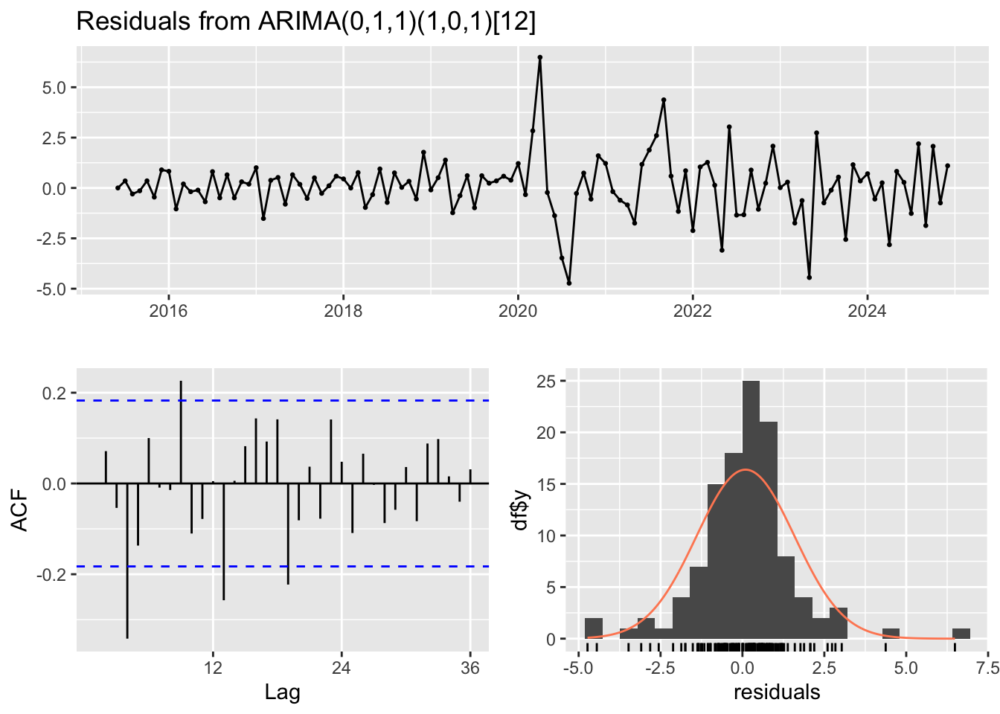
Ljung-Box test
data: Residuals from ARIMA(0,1,1)(1,0,1)[12]
Q* = 55.771, df = 20, p-value = 3.147e-05
Model df: 3. Total lags used: 23
### NATIONAL FORECASTarima_forecast <-forecast( arima_model,h =27,level =c(80, 95))arima_forecast
Point Forecast Lo 80 Hi 80 Lo 95 Hi 95
Oct 2025 34.84268 32.84859 36.83677 31.792988 37.89238
Nov 2025 34.85572 30.75267 38.95878 28.580638 41.13081
Dec 2025 35.47977 30.03057 40.92897 27.145937 43.81360
Jan 2026 36.66463 30.14141 43.18786 26.688218 46.64104
Feb 2026 36.56001 29.11615 44.00388 25.175600 47.94443
Mar 2026 36.49648 28.23393 44.75904 23.859993 49.13298
Apr 2026 35.89526 26.88812 44.90240 22.120028 49.67049
May 2026 35.02130 25.32660 44.71600 20.194531 49.84807
Jun 2026 34.72330 24.38667 45.05993 18.914787 50.53181
Jul 2026 34.50607 23.56511 45.44703 17.773310 51.23882
Aug 2026 34.47246 22.95885 45.98608 16.863910 52.08102
Sep 2026 34.49912 22.44002 46.55823 16.056314 52.94193
Oct 2026 35.07516 22.34479 47.80553 15.605738 54.54458
Nov 2026 35.26096 21.76761 48.75432 14.624653 55.89727
Dec 2026 35.45838 21.24293 49.67384 13.717724 57.19904
Jan 2027 36.13203 21.22943 51.03464 13.340473 58.92360
Feb 2027 35.98834 20.42891 51.54777 12.192241 59.78444
Mar 2027 35.92982 19.74018 52.11945 11.169906 60.68973
Apr 2027 35.76987 18.97365 52.56608 10.082277 61.45745
May 2027 35.24404 17.86240 52.62567 8.661124 61.82695
Jun 2027 34.79854 16.85057 52.74651 7.349492 62.24758
Jul 2027 34.81912 16.32215 53.31609 6.530446 63.10779
Aug 2027 34.52785 15.49771 53.55799 5.423760 63.63194
Sep 2027 34.39895 14.85017 53.94773 4.501673 64.29622
Oct 2027 34.60179 14.43789 54.76569 3.763760 65.43982
Nov 2027 34.60179 13.74859 55.45498 2.709578 66.49400
Dec 2027 34.60179 13.08137 56.12221 1.689143 67.51443
autoplot(arima_forecast)+labs(title ="Forecast of National Elective Waitlist Performance",subtitle ="ARIMA forecast through December 2027",x ="Year",y ="Percentage waiting over 120 days" )
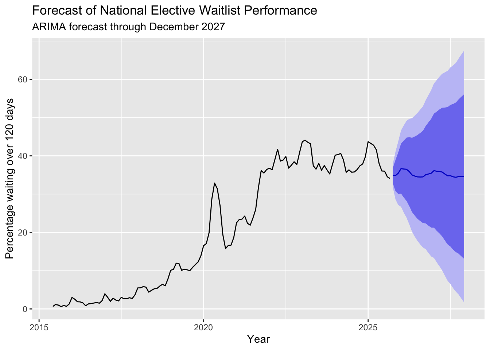
ARIMA Forecast Results
The ARIMA model forecasts that the percentage of elective waitlist counts waiting over 120 days will remain around the mid-30% range through 2026 and 2027. The forecast shows some monthly variation but does not predict a major improvement or deterioration over this period.
To evaluate the model, it was trained using data up to the end of 2024 and tested against the first nine months of 2025. The model produced a mean absolute error of approximately 3.24 percentage points. It tracked the general level of waitlist performance during the beginning of 2025 but did not fully capture the faster improvement that occurred later in the year.
The prediction intervals widen considerably further into the forecast, showing that uncertainty increases over time. Therefore, the ARIMA forecast should be interpreted as an estimate of the likely future trend rather than an exact prediction of elective waitlist performance.
Machine Learning Prediction Model
A machine-learning approach was developed to investigate whether subgroup-level patterns could improve prediction of elective waitlist performance. While the ARIMA model focuses on the national trend over time, the machine-learning models used district, specialty, ethnicity, calendar information and previous waitlist performance to predict the percentage waiting over 120 days.
The data were grouped by month, district, specialty and ethnicity. Historical waitlist performance from 1, 3 and 12 months earlier was then created as predictor variables. The data were divided chronologically, with 2015–2023 used for training, 2024 for validation and model comparison, and January–September 2025 reserved for final testing.
A Random Forest regression model was developed to test whether these subgroup characteristics and historical waitlist patterns could predict the percentage waiting over 120 days.
Several Random Forest configurations were evaluated using the 2024 validation data. The best-performing configuration used a maximum tree depth of 8 and a minimum leaf size of 50. This model achieved a validation Mean Absolute Error (MAE) of 9.26 percentage points.
A simple persistence baseline was also evaluated. Rather than using a machine-learning model, the baseline assumed that each subgroup’s percentage waiting over 120 days would remain the same as in the previous month. This produced a lower validation MAE of 8.04 percentage points. Because the Random Forest produced a higher prediction error than the simpler baseline, it did not improve prediction on the unseen 2024 validation data and was therefore not selected as the preferred subgroup-level model.
Effect of Waitlist Size on Prediction Error
Prediction accuracy was also examined across different waitlist sizes. The persistence baseline produced an MAE of 8.04 percentage points across all eligible observations, but the error decreased as smaller waitlist groups were excluded. For groups with at least 20 people waiting, the MAE decreased to 4.66 percentage points, and for groups with at least 100 people waiting, it decreased further to 3.56 percentage points.
This suggests that smaller district, specialty and ethnicity groups experience considerably greater month-to-month variation and are therefore more difficult to predict. These smaller groups were retained in the analysis because they remain part of the reported waitlist data.
Gradient Boosting Model
A Gradient Boosting regression model was also tested using the same predictor variables and chronological validation approach as the Random Forest model. The model achieved a 2024 validation Mean Absolute Error (MAE) of 9.31 percentage points.
This was slightly higher than the Random Forest MAE of 9.26 percentage points and also higher than the simple persistence baseline MAE of 8.04 percentage points
Because Gradient Boosting did not improve predictive performance on unseen validation data, it was not selected as the preferred subgroup-level model.
These results further suggest that more complex machine-learning approaches did not outperform the simpler previous-month persistence baseline for subgroup-level waitlist prediction.
Forecasting the National Total Waitlist
# ============================================================# FORECAST NATIONAL TOTAL WAITLIST# ============================================================# Creates a monthly time series for the total number# of people on the national elective waitlisttotal_waiting_ts <-ts( national_monthly$Total_waiting,start =c(2015, 6),frequency =12)# Displays the time seriestotal_waiting_ts
# ============================================================# VALIDATE TOTAL WAITLIST FORECAST# ============================================================# Training data: June 2015 to December 2024total_train_ts <-window( total_waiting_ts,end =c(2024, 12))# Test data: January to September 2025total_test_ts <-window( total_waiting_ts,start =c(2025, 1))# Let ARIMA choose the best model using training data onlytotal_test_model <-auto.arima( total_train_ts)# See which ARIMA model was selectedtotal_test_model
# Forecast the same 9 months that we actually have for 2025total_test_forecast <-forecast( total_test_model,h =length(total_test_ts))# Compare forecast against actual 2025 numbersaccuracy( total_test_forecast, total_test_ts)
ME RMSE MAE MPE MAPE MASE
Training set 89.70169 783.3628 526.8557 0.1669842 1.030304 0.1055582
Test set -7881.04804 8768.7784 7881.0480 -10.2215325 10.221532 1.5790074
ACF1 Theil's U
Training set -0.01789036 NA
Test set 0.74671653 6.155707
# ============================================================# HOLT DAMPED TREND - TOTAL WAITLIST# ============================================================# Fits a damped trend model using data through December 2024holt_total_model <-holt( total_train_ts,h =length(total_test_ts),damped =TRUE)# Shows the modelholt_total_model
Point Forecast Lo 80 Hi 80 Lo 95 Hi 95
Jan 2025 83946.98 82837.73 85056.22 82250.53 85643.42
Feb 2025 84563.14 82931.05 86195.24 82067.06 87059.22
Mar 2025 85166.99 83090.65 87243.33 81991.50 88342.48
Apr 2025 85758.76 83272.21 88245.31 81955.90 89561.61
May 2025 86338.69 83459.73 89217.65 81935.71 90741.67
Jun 2025 86907.02 83645.71 90168.34 81919.27 91894.78
Jul 2025 87463.99 83826.09 91101.89 81900.30 93027.68
Aug 2025 88009.82 83998.58 92021.06 81875.16 94144.48
Sep 2025 88544.73 84161.80 92927.66 81841.62 95247.84
# Tests predictions against the actual Jan-Sep 2025 valuesaccuracy( holt_total_model, total_test_ts)
ME RMSE MAE MPE MAPE MASE
Training set 127.5751 846.5245 583.9463 0.2208689 1.157247 0.1169966
Test set -7865.5691 8819.5211 7865.5691 -10.2076497 10.207650 1.5759061
ACF1 Theil's U
Training set 0.127259 NA
Test set 0.738583 6.199511
# ============================================================# RECENT-WINDOW ARIMA TEST: 2022-2024# ============================================================# Uses only the more recent 2022-2024 period for trainingrecent_total_train <-window( total_waiting_ts,start =c(2022, 1),end =c(2024, 12))# Automatically selects the best ARIMA modelrecent_total_model <-auto.arima( recent_total_train)# Shows which ARIMA model was selectedrecent_total_model
# Forecasts Jan-Sep 2025recent_total_forecast <-forecast( recent_total_model,h =length(total_test_ts))# Checks how well the recent-window model predicted 2025accuracy( recent_total_forecast, total_test_ts)
ME RMSE MAE MPE MAPE MASE
Training set 1.617202 853.1699 646.6616 0.01273363 0.9022544 0.1097719
Test set -8370.055556 9398.8020 8370.0556 -10.86220943 10.8622094 1.4208309
ACF1 Theil's U
Training set 0.2093707 NA
Test set 0.7390699 6.609711
Forecasting the National Total Waitlist
To assess whether the total-waitlist forecasting approach was reliable across more than one period, a rolling backtest was performed. Separate models were trained using only data available before each test year, then evaluated against the data from that test year.
Backtests were carried out for 2022, 2023, 2024 and the available January–September 2025 period. This provides a more robust assessment than relying on a single holdout year and helps identify whether forecasting accuracy is consistent over time.
# ============================================================# ROLLING BACKTEST - NATIONAL TOTAL WAITLIST# ============================================================backtest_years <-c(2022, 2023, 2024, 2025)backtest_results <-data.frame()for (year in backtest_years) {# Uses all data before the test year train_end_year <- year -1 train_data <-window( total_waiting_ts,end =c(train_end_year, 12) )# 2025 only has data up to September test_end_month <-ifelse( year ==2025,9,12 ) test_data <-window( total_waiting_ts,start =c(year, 1),end =c(year, test_end_month) )# Fits ARIMA using only the training data model <-auto.arima( train_data )# Forecasts the test period predictions <-forecast( model,h =length(test_data) )# Calculates forecast accuracy results <-accuracy( predictions, test_data )# Saves the test result backtest_results <-rbind( backtest_results,data.frame(Year = year,MAE = results["Test set", "MAE"],RMSE = results["Test set", "RMSE"],MAPE = results["Test set", "MAPE"] ) )}# Shows all backtest resultsbacktest_results
# ============================================================# FINAL TOTAL WAITLIST MODEL# ============================================================# Fits ARIMA using all available data through September 2025final_total_model <-auto.arima( total_waiting_ts)# Shows the selected modelfinal_total_model
After evaluating the total-waitlist forecasting approach, the selected model was fitted using the available historical data through September 2025. The model was then used to forecast the total national elective waitlist for the 27 months from October 2025 to December 2027.
#==============================================================# FORECAST TOTAL WAITLIST THROUGH DECEMBER 2027#===============================================================# 27 months: October 2025 to december 2027final_total_forecast<-forecast( final_total_model,h=27,level=c(80,95))final_total_forecast
Point Forecast Lo 80 Hi 80 Lo 95 Hi 95
Oct 2025 78610.83 77503.40 79718.25 76917.17 80304.48
Nov 2025 79129.91 77309.62 80950.19 76346.01 81913.80
Dec 2025 80346.23 77957.13 82735.33 76692.42 84000.05
Jan 2026 80471.51 77607.96 83335.06 76092.09 84850.94
Feb 2026 80428.67 77154.20 83703.15 75420.79 85436.55
Mar 2026 80507.59 76867.03 84148.15 74939.83 86075.35
Apr 2026 80497.48 76524.07 84470.89 74420.67 86574.29
May 2026 80400.78 76120.22 84681.34 73854.23 86947.33
Jun 2026 80712.64 76145.52 85279.76 73727.83 87697.45
Jul 2026 80983.38 76146.63 85820.12 73586.21 88380.54
Aug 2026 81319.97 76227.85 86412.09 73532.25 89107.69
Sep 2026 82032.81 76697.53 87368.09 73873.21 90192.42
Oct 2026 82426.89 76793.11 88060.66 73810.77 91043.00
Nov 2026 82877.81 76940.02 88815.60 73796.75 91958.88
Dec 2026 84007.44 77774.37 90240.52 74474.78 93540.10
Jan 2027 84008.94 77492.17 90525.71 74042.40 93975.48
Feb 2027 84011.97 77222.82 90801.12 73628.86 94395.08
Mar 2027 84030.06 76978.89 91081.22 73246.22 94813.89
Apr 2027 83949.18 76645.34 91253.01 72778.92 95119.43
May 2027 83376.05 75827.98 90924.11 71832.27 94919.82
Jun 2027 83422.38 75637.74 91207.02 71516.80 95327.96
Jul 2027 83499.85 75485.62 91514.09 71243.13 95756.57
Aug 2027 83932.65 75695.22 92170.09 71334.58 96530.72
Sep 2027 84738.42 76283.67 93193.16 71808.00 97668.84
Oct 2027 85147.03 76410.48 93883.57 71785.63 98508.42
Nov 2027 85535.55 76503.52 94567.57 71722.26 99348.83
Dec 2027 86217.00 76892.07 95541.93 71955.75 100478.25
The total-waitlist forecast was then combined with the ARIMA forecast of the percentage waiting over 120 days. This allows the analysis to estimate not only the future size of the waitlist, but also the approximate number of people expected to be waiting longer than 120 days.
# ============================================================# COMBINE FINAL FORECASTS# ============================================================# Creates monthly dates from October 2025 to December 2027forecast_dates <-seq(as.Date("2025-10-01"),as.Date("2027-12-01"),by ="month")# Combines both national forecastsfinal_forecast <-data.frame(Date = forecast_dates,# Forecast total number of people on the waitlistPredicted_total_waiting =as.numeric(final_total_forecast$mean),# Forecast percentage waiting longer than 120 daysPredicted_percent_over120 =as.numeric(arima_forecast$mean))# Calculates estimated number of people waiting over 120 daysfinal_forecast <- final_forecast |>mutate(Predicted_people_over120 = Predicted_total_waiting * Predicted_percent_over120 /100,# Round results for readabilityPredicted_total_waiting =round(Predicted_total_waiting),Predicted_percent_over120 =round(Predicted_percent_over120, 1),Predicted_people_over120 =round(Predicted_people_over120) )# Show complete final forecastprint(final_forecast)
# ============================================================# FORECAST % WAITING OVER 120 DAYS WITH 95% INTERVAL# ============================================================# Historical national percentagehistorical_percent <- national_monthly |>transmute(Date =`Month End Date`,Percentage = Percentage_over120,Type ="Historical" )# Forecast national percentage with 95% intervalforecast_percent <-data.frame(Date = forecast_dates,Percentage =as.numeric(arima_forecast$mean),Lower_95 =as.numeric(arima_forecast$lower[, "95%"]),Upper_95 =as.numeric(arima_forecast$upper[, "95%"]),Type ="Forecast")# Plotggplot() +# 95% forecast uncertaintygeom_ribbon(data = forecast_percent,aes(x = Date,ymin = Lower_95,ymax = Upper_95 ),alpha =0.2 ) +# Historical linegeom_line(data = historical_percent,aes(x = Date,y = Percentage,colour = Type ),linewidth =1 ) +# Forecast linegeom_line(data = forecast_percent,aes(x = Date,y = Percentage,colour = Type ),linewidth =1 ) +# Health NZ targetgeom_hline(yintercept =5,linetype ="dashed" ) +labs(title ="National Percentage Waiting Over 120 Days",subtitle ="Historical data to September 2025 and forecast to December 2027",x =NULL,y ="Waiting over 120 days (%)",colour =NULL ) +# Show every year on the x-axisscale_x_date(date_breaks ="1 year",date_labels ="%Y",limits =as.Date(c("2015-01-01", "2027-12-01")),expand =c(0, 0) ) +theme_minimal()
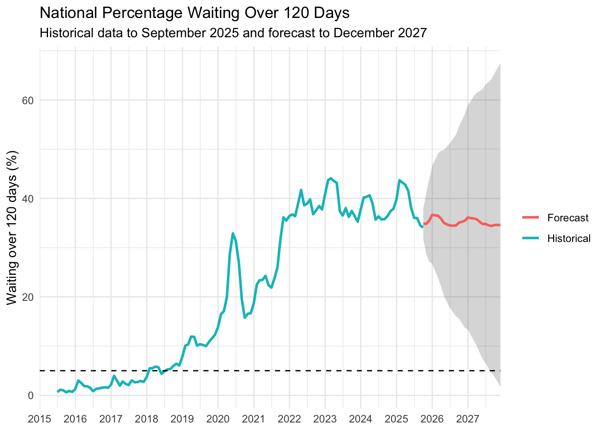
The forecast indicates that New Zealand is not expected to meet the elective treatment wait-time target by the end of 2027. The Government’s target is for 95% of patients to receive elective treatment within four months, which is equivalent to approximately 5% waiting longer than four months.
However, the model forecasts that 35.5% of patients will still be waiting over 120 days in December 2026 and 34.6% in December 2027. Although this represents a small improvement, the forecast remains far above the level required to meet the target.
The widening 95% prediction interval shows that uncertainty increases further into the future, so these figures should be treated as estimates rather than exact outcomes. The Government’s target is intended to be achieved by 2030, so this analysis does not determine whether the 2030 target will ultimately be reached; it shows that the target is not forecast to be reached by the end of 2027.
Forecast Total Elective Waitlist
# ============================================================# FORECAST TOTAL ELECTIVE WAITLIST# ============================================================# Historical national total waitlisthistorical_total <- national_monthly |>transmute(Date =`Month End Date`,Total_waiting = Total_waiting,Type ="Historical" )# Forecast total waitlist with 95% intervalforecast_total <-data.frame(Date = forecast_dates,Total_waiting =as.numeric(final_total_forecast$mean),Lower_95 =as.numeric(final_total_forecast$lower[, "95%"]),Upper_95 =as.numeric(final_total_forecast$upper[, "95%"]),Type ="Forecast")# Plot historical and forecast total waitlistggplot() +# 95% forecast intervalgeom_ribbon(data = forecast_total,aes(x = Date,ymin = Lower_95,ymax = Upper_95 ),alpha =0.2 ) +# Historical total waitlistgeom_line(data = historical_total,aes(x = Date,y = Total_waiting,colour = Type ),linewidth =1 ) +# Forecast total waitlistgeom_line(data = forecast_total,aes(x = Date,y = Total_waiting,colour = Type ),linewidth =1 ) +# Show every year and stop at 2027scale_x_date(date_breaks ="1 year",date_labels ="%Y",limits =as.Date(c("2015-01-01", "2027-12-01")),expand =c(0, 0) ) +labs(title ="National Elective Waitlist",subtitle ="Historical data to September 2025 and forecast to December 2027",x =NULL,y ="Total people waiting",colour =NULL ) +theme_minimal()
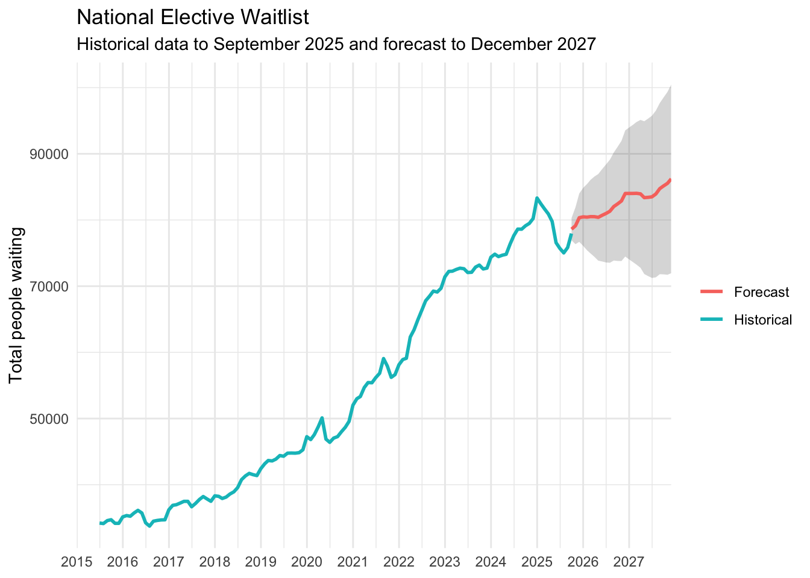
The national elective waitlist is forecast to increase over the next two years. From approximately 78,000 people in September 2025, the model predicts the waitlist will rise to about 84,000 by December 2026 and 86,200 by December 2027. The widening 95% prediction interval shows that uncertainty increases further into the forecast period, but the central forecast still indicates continued growth in the total number of people waiting for elective treatment.
Conclusion
This analysis found substantial variation in elective waitlist performance across specialties, districts and ethnic groups, with several areas experiencing high proportions of people waiting longer than 120 days.
Forecasting results suggest that the national percentage waiting over 120 days is likely to remain around the mid-30% range through 2026 and 2027, while the total elective waitlist is expected to continue increasing. This means that although the proportion waiting over 120 days may improve slightly, the overall number of people waiting for elective treatment is still expected to remain high.
The results also show that forecasting uncertainty increases further into the future. Therefore, the projections should be interpreted as estimates of likely trends rather than exact outcomes. Overall, the analysis suggests that substantial improvement would still be required for elective wait-time performance to approach the national target.
Use of Artificial Intelligence
Artificial intelligence tools were used as a learning and development aid during this project, particularly for the machine-learning and forecasting components, which extend beyond the material covered in my first year of study. AI assistance was used to help explain unfamiliar modelling concepts, support the development and debugging of R and Python code, and assist with interpreting model evaluation methods.
The analysis, selection of the research questions, data preparation, model testing and interpretation of the results were carried out as part of my own learning process. AI-generated suggestions were reviewed and tested against the data rather than being accepted without evaluation.